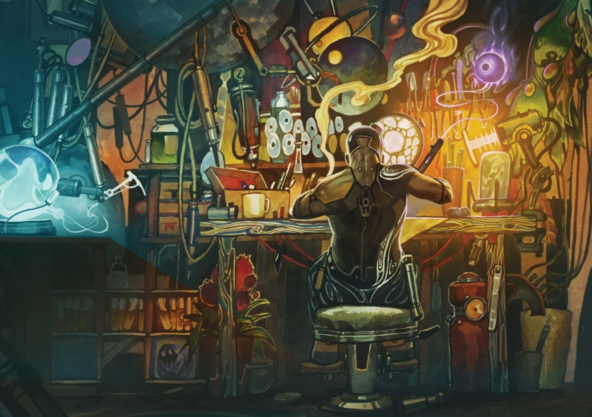

Crafting Process
Salvaging Numenera is a series of Intellect based Tasks (listed below).
Initial salvaging task requires an amount of time equal to [15 minutes X calculated task difficulty].
Plus you have to spend 5 more minutes to extract separate Iotum types.
-
Perform an initial salvaging task ("Am I able to gain anything here?").
Success leads you to the second step. In case of failure there is no Iotum to extract.
Maximum level of available Iotum type is equal to the base initial task difficulty. -
Calculate the amount of Iotum types you can extract:
- Every Salvaging Numenera skill's level produces one additional Iotum type.
- Every asset produces one addtional Iotum type.
-
Every Iotum type requires performing separate salvaging task ("Am I able to extract exactly what I want?").
Task difficulty is equal to the Iotum level.
Success grants an amount of Iotum according to the column "Units Salvaged" in Iotum table and an amount of parts equal to [extracted Iotum amount X Iotum level]. -
Initial salvaging task success can not only extract Iotum, but also some cyphers.
The amount of cyphers found is decided by GM. But in general it's equal to the 1d6 minus amount of Iotum types you tried to extract.
Merged Iotum types
Some Iotum types were merged into Iotum from the same levels on goal to simplify salvaging system.
Changes are described in the table below.
| Iotum level | Original Iotum | Merged Into |
|---|---|---|
| 4 | Bio-Circuitry | Pliable Metal |
| 4 | Synthsteel | Pliable Metal |
| 5 | Azure Steel | Mimetic Gel |
| 5 | Quantium | Mimetic Gel |
| 6 | Thaum Dust | Amber Crystal |
| 6 | Protomatter | 10 x Amber Crystal |
| 7 | Kaon dot | Psiranium |
| 7 | Monopole | Psiranium |
| 7 | Smart Tissue | Psiranium |
| 8 | Midnight Stone | Oraculum |
| 8 | Virtuon particles | Oraculum |
| 9 | Philosophine | Tamed iron |
| 9 | Scalar Boson Rod | Tamed iron |
| 9 | Data orb | Tamed iron |